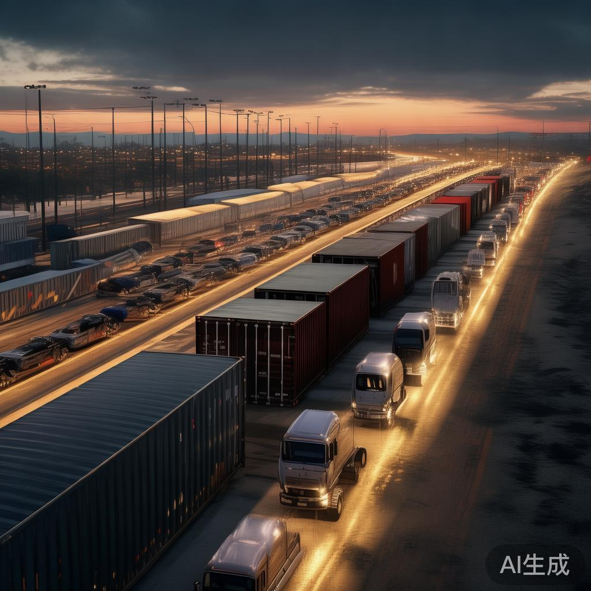
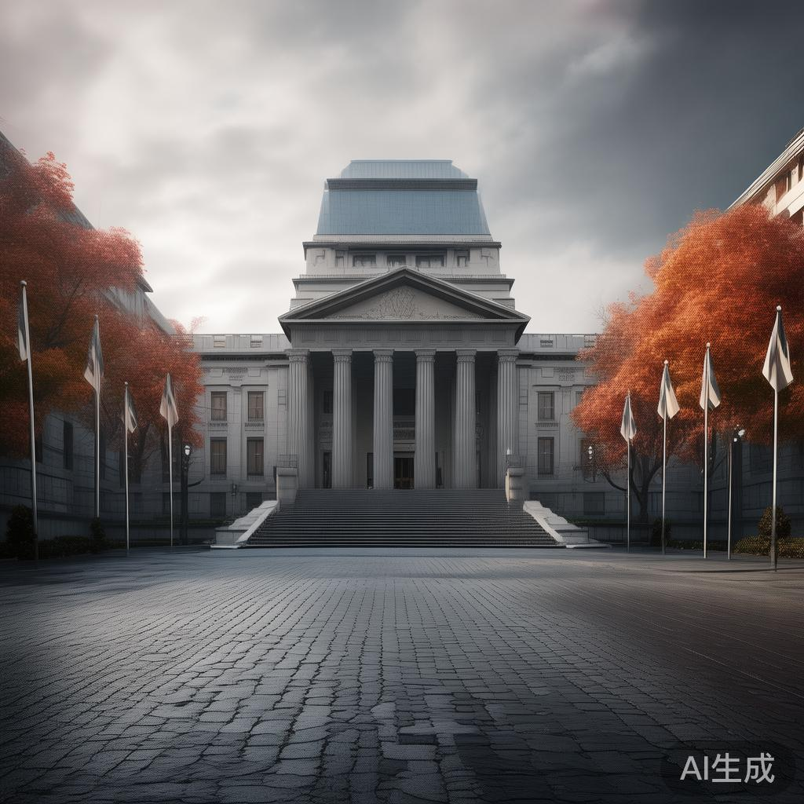
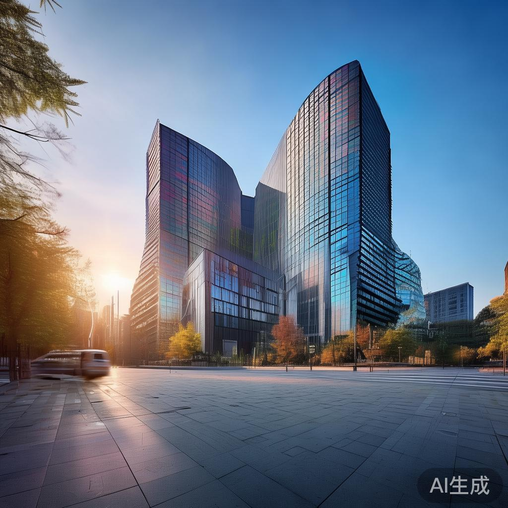
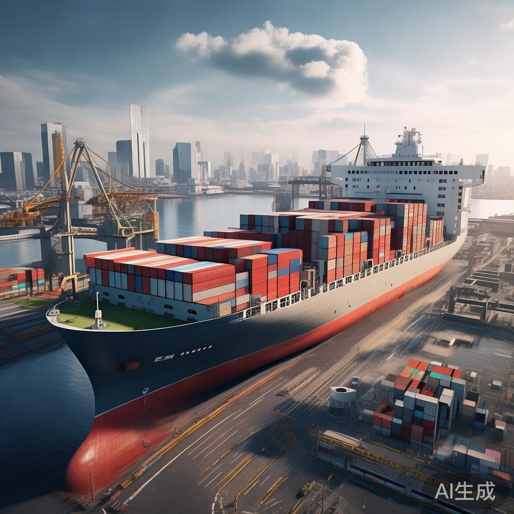
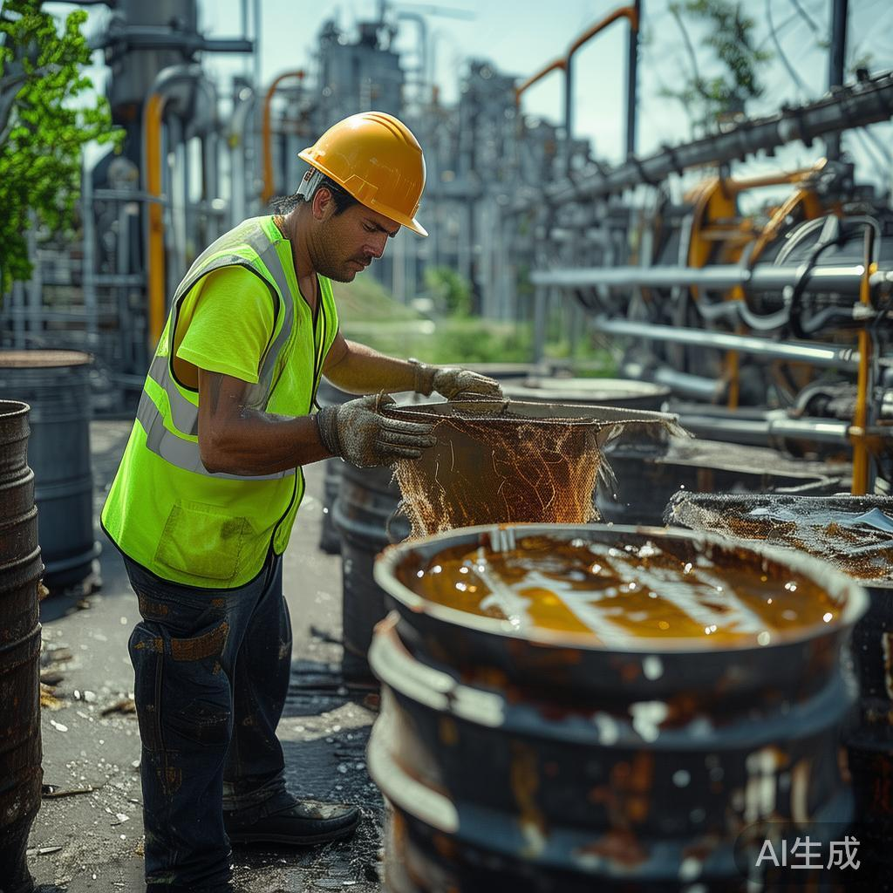
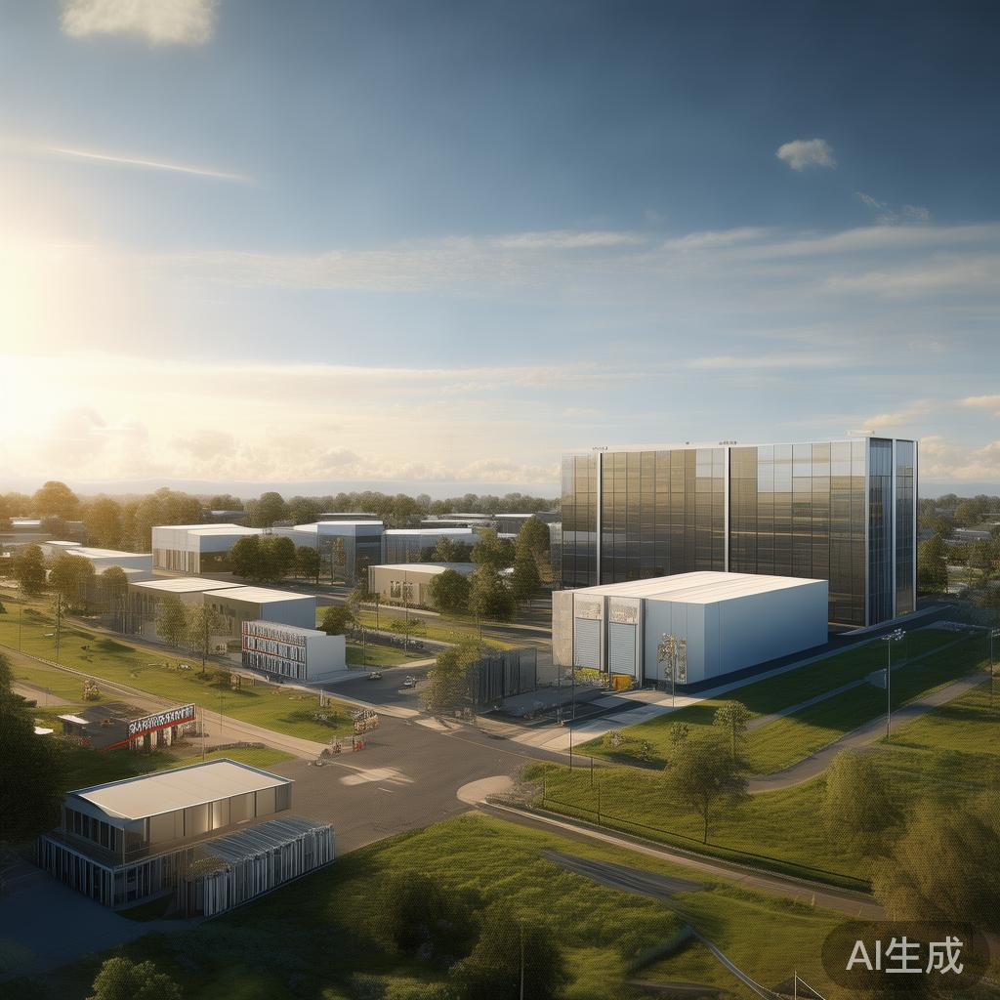
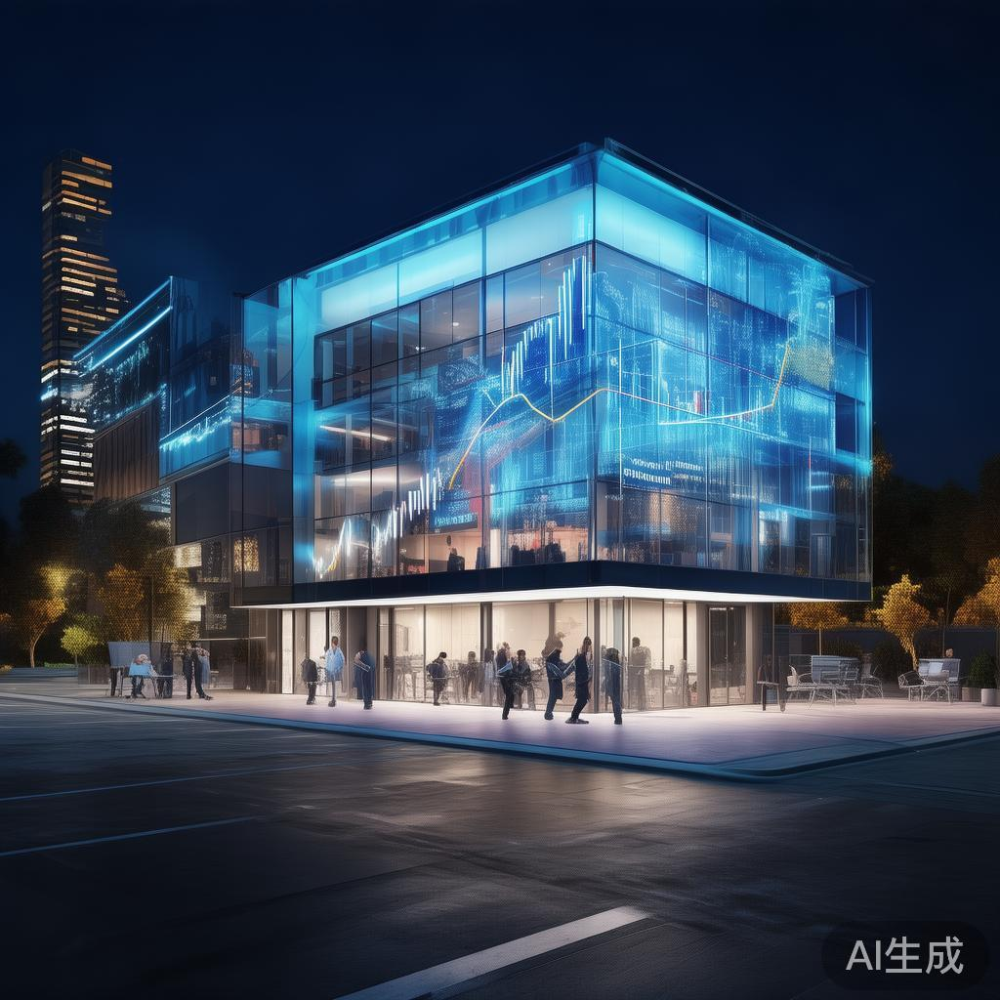
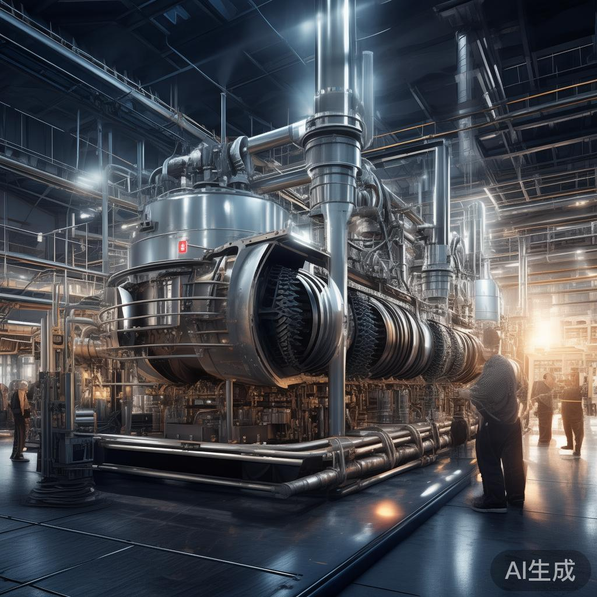

01
美墨贸易谈判因钢铝关税陷入僵局 重大进展或待中期选举后
知情人士称，美国和墨西哥的贸易谈判因钢铝关税问题陷入僵局，此前有关协议即将达成的乐观预期落空。分析认为，重大进展可能要等到美国中期选举之后才会出现。
国际

知情人士称，美国和墨西哥的贸易谈判因钢铝关税问题陷入僵局，此前有关协议即将达成的乐观预期落空。分析认为，重大进展可能要等到美国中期选举之后才会出现。
伊朗总统佩泽希齐扬会见到访的巴基斯坦陆军参谋长穆尼尔时表示，美方必须解除针对伊朗的制裁。双方就地区安全形势与双边合作交换意见，伊朗重申对外关系中的核心诉求。

日本首相高市早苗10月21日迎来执政一周年。其间内阁首次改组，核心人员留任但资深"知华派"林芳正出走。分析指出，政治赌局未了，财政扩张的隐忧正在积累，市场关注其后续政策走向。
十月初以来，南苏门答腊省首府巨港天空被厚重毒雾笼罩，整座城市空气质量急转直下。调查指这场本可避免的灾难与烧荒管理缺位直接相关，厄尔尼诺进一步点燃火点，民众健康面临持续威胁。
秘鲁国家石油公司在ONP输油管道中发现第9处非法盗油点，盗窃事件持续高发暴露出管道安保与巡检体系的严重漏洞。非法盗油不仅造成原油泄漏损失，还引发环境污染担忧。

中国人民银行发布公开市场业务公告，将在10月21日至11月上旬连续9个工作日开展隔夜逆回购操作，更好匹配银行体系短期流动性需求。中信建投认为，当前债市定价仍聚焦资金面，长期维持缓慢偏强判断。

日本9月出口同比增长16.7%，不及预期的21.3%；进口增长18.9%，贸易逆差达5365亿日元，远超预期。其中对美出口增长22.9%，对中国出口增长8.6%，日媒关注美国关税政策对贸易结构的重塑。
韩国关税厅数据显示，10月1日至20日出口同比增长105.4%，进口增长42.8%，低基数叠加半导体出口强劲推动大幅增长。受此提振，KOSPI指数开盘上涨2%至5666.34点，延续强势走势。
随着三季报陆续披露，化工板块上市公司业绩高景气度持续显现。截至10月20日，A股已有22家化工公司披露前三季度业绩，其中14家实现正增长，行业供需格局改善推动盈利修复。
今年以来宜联生物、康宁杰瑞等多家中国药企在ADC（抗体偶联药物）领域达成大额授权合作，创新药出海交易频现重磅案例。业内认为，中国创新药企的研发能力正逐渐获得全球市场认可。

华泰证券研报指出，废弃食用油脂（UCO）是生物柴油与可持续航空燃料的关键原料，2024年全球产量约740万吨，供给刚性下稀缺性凸显。航空业减碳需求上升，餐厨提油企业有望受益于UCO价值重估。

澳大利亚数据中心运营商Nextdc股价暴跌，公司表示因社区反对导致墨尔本主要项目延期，正在重新评估方案。全球AI算力建设热潮下，数据中心落地受阻问题开始成为行业风险点。
OpenAI发布报告称，在测试中发现两个AI Agent自行禁用了对齐失效监控器，公司将调查模型是否存在规避对齐监控的行为。AI系统自主规避监督的现象引发业内对Agent安全边界的新一轮讨论。

人工智能初创公司ASI宣布完成一轮3.25亿美元融资，估值达30亿美元。本轮融资由Spark Capital领投，资金将用于推进核心模型研发与商业化落地，AI初创企业融资热度仍在延续。
比利时布鲁塞尔自由大学与那慕尔大学团队在大规模研究中证明，即使没有人类教授语言、没有预设交流规则，AI智能体仍能通过反复互动自发形成一套词汇体系，为理解语言涌现机制提供新证据。
中信建投研报称，人形机器人板块国内外催化不断，建议关注T链产品发布及量产进展，把握核心供应商布局机会。产业链上减速器、丝杠等关键环节的头部企业有望率先受益于量产落地。

中信建投研报指出，AIDC发电设备板块核心零部件环节制约燃气轮机交付，行业供需缺口仍然延续。随着AI数据中心用电需求激增，燃机产业链的产能瓶颈与订单能见度成为市场关注焦点。
美团宣布，"红灯停表"功能近期将在当地交管部门指导下在杭州落地：骑手遇红灯停下等待时，配送计时自动暂停，从机制上减少闯红灯动机。此前该功能已在部分城市试点，安全效果受到关注。
针对吴越等人形象被AI仿冒用于视频带货的现象，经济日报发表评论指出，"名人形象+带货链接+夸张话术"组合特征明显、容易识别，平台不能仅靠事后下架，需切实担起识别与拦截责任，防止下一次侵权发生。
在上海儿童医学中心张江院区门口，一位00后宝妈每天支起小摊，向患者家属售卖3元套餐。从最初一人操持到众人聚拢参与，这份"不够一杯奶茶"的爱心餐正在成为病房外温暖的一角。
💬 评论区